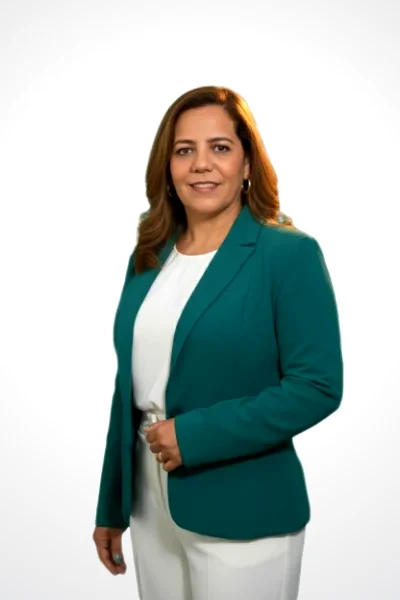

PASTORA PRINCIPAL
Yvelina Castillo Cedeño
Nacida en Higüey en una familia cristiana, manifestó desde temprana edad un llamado al ministerio pastoral. Se formó en el Instituto Bíblico entre 1994 y 1997, y profesionalmente en Psicología Clínica con estudios de maestría, desarrollando labores de apoyo y orientación para niños, niñas y adolescentes.
Junto a su esposo, el Pastor Brígido Beras, pastoreó durante nueve años en Pedro Sánchez (El Seibo) y once años en Samaná, donde culminaron la construcción del templo y el fortalecimiento integral de la congregación. En 2019 asumieron la dirección de Iglesia Fuente Inagotable en San Pedro de Macorís.
En 2024, tras el fallecimiento del Pastor Brígido luego de enfrentar con fe y valentía un proceso de cáncer, la Pastora Yvelina continuó al frente del ministerio con determinación y firmeza.
"Más de veinte años de ministerio pastoral marcados por la fe, el servicio y el compromiso inquebrantable con el evangelio de Jesucristo."